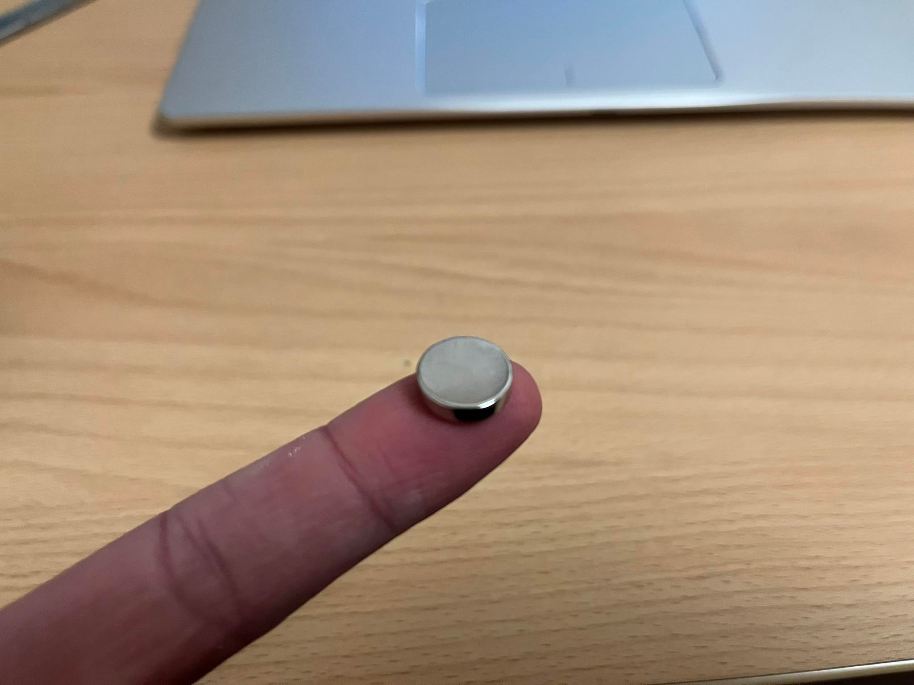

3D Printing og Scanning
Designing the spoonholder for my creatine
I decided to 3D print somekind of a holder that would hold my scoop that i use for my creatine. The reason for that is that I was tired of having to rummage through my creatine can to get the scoop. The creatine powder would both get on my fingers and it was annoying to have to look for the spoon.

The requirements I set for myself were that the spoon has to be in the can, it has to be convenient to reach the scoop and it has to be easy to move the holder from can to can as the creatine can run out and if I buy another doll I have to I don't pour all the creatine powder into the bucket with the holder.
The design I came up with was a holder that attaches to the wall of the housing with magnets. I started buying 2 12mmx3mm magnets.
Next I used Solidworks to design the holder. The design I came up with can be seen in the image below.

This design is very convenient as it is very easy to reach the scoop and because it is very small, the 3D printing takes no time.
Slicer
The printer I decided to use was a Prusa MK3Prusa MK3. In order to print I had to download Prusaslicer which converts .stl files into g-code that the printer can understand. Next I made a .stl file of the holder and transferred to Prusaslicer. There chose to have the item print on its back and have supports only from the build plate, i had to have somekind of support for the bridge that holds the scoop but i didn´t want any support to be in the slot for the magnet. I did a 30% Infill and supports on buildplate only and the base print settings, 0.15mm quality, and PLA filament. Then i sliced the part by clicking the slice button. Next, I took the sd card that was in the printer itself and inserted it into my computer. Then I was able to save the g-code from my computer to the sd card and then put it back into the printer. Overall it took 15 min. to print.

Þetta er niðurstaðan

 Here you can download the project files.
Here you can download the project files.
problems with 3D printing
I had to print the creatine holder 3 times as the opening for the magnet was not big enough. It turns out that the plastic expands by 3% during the printing itself which messed with the tolerences. So I enlarged the opening by 0.5mm which was a good fit. But then I realized that the bow that holds the spoon itself is the exact width of the spoon so I made it bigger and longer.
3D scanning
The object I decided to 3D scan is a dnd figurine I painted a long time ago.

I used Scaniverse which is an app on my phone to scan the item as some of my fellow students recommended that app. To start scanning I chose new scan>small object. The way the app works is that it uses both the lidar scanner built into the phone and the camera to scan. What I think Scaniverse does better than other apps is that it records video instead of the person having to take countless photos.
Result of the 3D scan
The video here below is the result.
Timetable
| Project Section | Description | Time |
|---|---|---|
| 3D Design | Design and drawing | 2 hours |
| Testing | Testing the 3D printer | 1 hour |
| 3D Print | 3D Printing | 1 hour |
| 3D Scan | 3D scanning an object | 1 hour |
| Documantation | Documenting on website | 3 hours |
| 8 hours |
The project took alot less time then i predicted because the object that i 3D printed was so small and thus it took very little time to print. Along with that, I had already decided which program to use for the 3D scan. Otherwise, the project went very well and there were no major problems like in the previous project :).